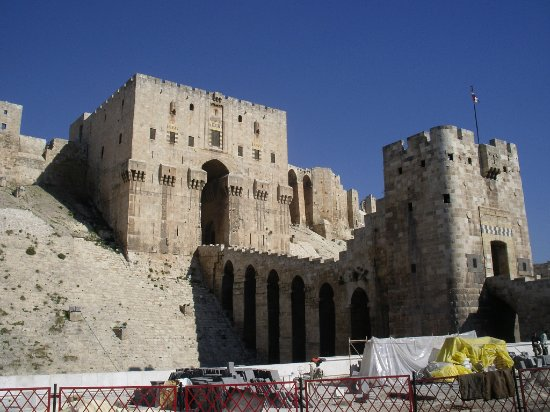
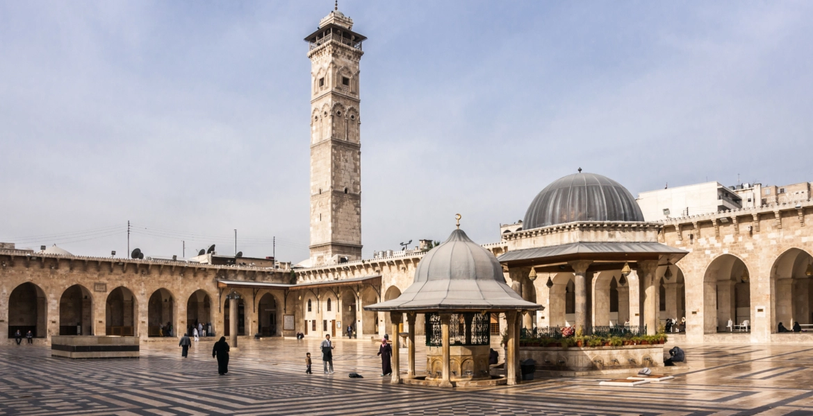

HALEP
Suriye'de bir şehirdir. Halep merkezinin 2007 nüfusu 1,7 milyon civarında olup, Halep'e bağlı olan yerleşim yerleri ile toplam nüfusu 4.393.000 'dir.Halep Arapça'da ve diğer bazı Sami dillerinde süt veren demektir. Halep ilinin de merkezidir.
Halep, Osmanlı İmparatorluğu'nun en önemli kentleri arasında yer almış, Türkçe deyimlere ve Türk edebiyatına yerleşmiştir. "Halep oradaysa arşın burada" deyimi, Aşık Ömer'in "İşte geldim gidiyorum şen olasın Halep şehri" beyiti, Aşık Emrah'ın sevdiğini Halep'te araması, Kerem'in Aslı'nın ateşine Halep'te yanıp kül olması bu meyanda sayılabilir.
Tarihi MÖ 3000'li yıllara uzanan Halep Kalesi'nde çeşitli Mezopotamya devletleri, Roma İmparatorluğu, Bizans İmparatorluğu, Arap hakimiyeti, Emeviler, Abbasiler, Hamdaniler, Mirdasiler, Ukayliler çok kısa bir süreliğine Büyük Selçuklu Devleti ve Osmanlı İmparatorluğu devirleri yaşanmıştır.
I. Dünya Savaşı sonucunda Osmanlı İmparatorluğu'nun ortadan kalkmasından sonra bir müddet Fransızlarda kaldıktan sonra, Suriye Devleti kurulmuştur. Suriye'nin sürekli ticaret ve üretim merkezlerinden biri olmuştur.
HALEP-KALESİ
Emevî-Camii

